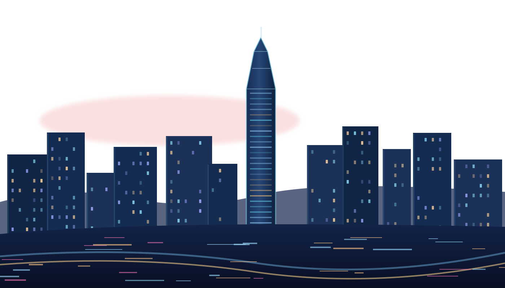

A 75-SECOND AUDIO JOURNEY
SHENZHEN✳
in sound.
From the morning rush to glowing tech streets and the quiet waterfront. Hear the city's changing rhythm, and watch it come alive.
TURN THE SOUND ON
TO SEE THE CITY MOVE

SCENE 01 / 03
FUTIAN, 08:00
The city wakes up. Footsteps, train rhythms, moving traffic.
Three sides of one city.
Click a chapter to jump straight to that part of the audio.
A city you can hear and see.
Shenzhen is often represented by its skyline and technology. This project explores the city through imagined everyday sounds: the rhythm of transit, the electronic energy of a shopping street, and the calm of the waterfront.
The three scenes change automatically with the soundtrack. The glow and equalizer respond to the playing audio in real time using the Web Audio API. You can pause, seek, adjust volume, or jump between scenes.
Creative disclosure: This is an artistic interpretation, not a documentary field recording. All audio was synthesized and assembled for this project, and all illustrations were drawn as original SVG vectors.
Everything credited.
Sources for the setting and concept, plus clear attribution for original project media.
Project media
- Soundscape:
shenzhen-75s.mp3, 75-second original synthesised audio composition, produced for this assignment. No third-party recordings or samples used. - Visuals:
futian.svg,huaqiangbei.svg,shenzhen-bay.svg, original SVG illustrations produced for this assignment. No third-party images or video reused. - Code: Original HTML, CSS and JavaScript; built using browser-native HTML5 Audio and Web Audio APIs. No external fonts, libraries, trackers, or CDNs.
Research / place references
- Shenzhen Municipal Government, “Cyber Shenzhen” (2024). Context for Huaqiangbei and the Gangxia North transit hub.
- Shenzhen Municipal Government, “Shenzhen's Huaqiangbei: A global gateway for Chinese smart technology” (2026). Huaqiangbei's electronics-market character.
- Shenzhen Municipal Government, “Shenzhen Bay Park” (2022). Background on the waterfront, paths and shoreline setting.
Show native HTML5 audio controls
These alternative controls play the same audio file independently of the main interactive player.